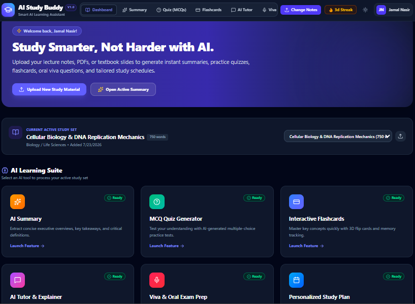
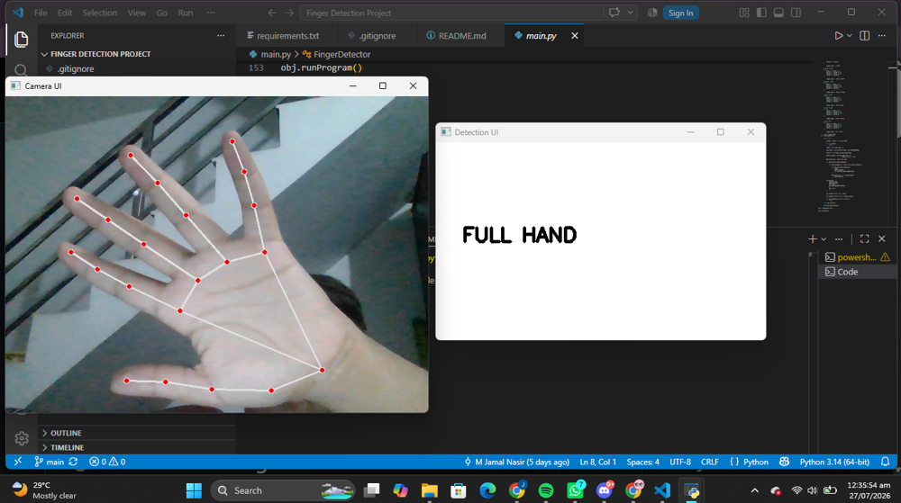
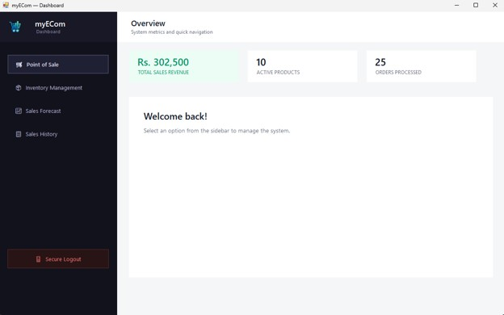

A freelance case, a self-directed deployed app, and two supporting builds — leading with the most complete proof.
Since June 2025, I've worked as a freelance Python and AI engineer on Upwork, designing and deploying AI solutions for global clients and startups. This covers AI/LLM integration using LangChain and vector databases for RAG-based systems, robust backends and APIs built with FastAPI and Flask, and automated data and web-scraping pipelines — plus predictive modeling and data analysis with Pandas, NumPy, and Scikit-Learn, including model fine-tuning.
Want something like this built for your product?
Book a callAn AI-powered study assistant that turns uploaded lecture notes or PDFs into instant summaries, adaptive practice quizzes, flashcards, and a personalized study schedule. Built and deployed end to end — not a mockup.

Want something like this built for your product?
Book a callTwo smaller builds that show range outside of LLM work — real-time computer vision and a full desktop backend system.


AI Hand & Finger Detection — real-time hand and finger detection using Python, OpenCV, and MediaPipe with accurate landmark tracking.
Store Management System (myECom) — a desktop POS and inventory system built in C# (.NET, Windows Forms) with Microsoft SQL Server.
Want something like this built for your product?
Book a call